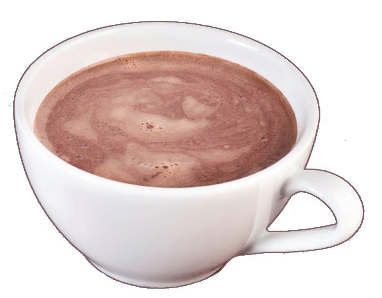

Cocoa drink
- 1 tablespoon cocoa powder
- 1 tablespoon sugar, lemon juice or honey (optional)
- 500 ml of water
Method
- 1. Boil the water.
- 2. Put the cocoa powder and lemon juice into a warmed cocoa pot.
- 3. Pour boiling water and stir well.
- 4. Serve it in a mug with honey or sugar (optional).
Figure 5.9 shows a cup of cocoa drink.

Figure 5.9: Cocoa drink
Activity 5.8
Preparation of stimulating drink
(i) Prepare black tea, coffee and cocoa by following the method for preparing each stimulating drink.
(ii) List the ingredients and equipment used in preparing these drinks.
(iii) Explain the importance of the drink which you have prepared.
(iv) What is the importance of warming up the teapot before adding tea?
105